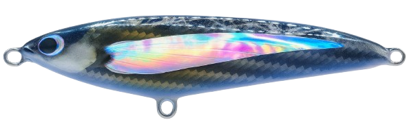
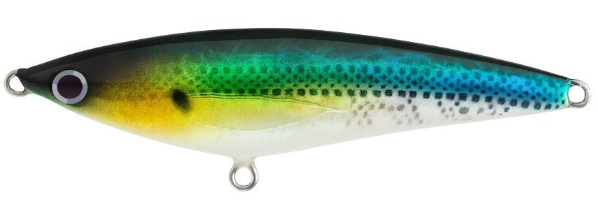
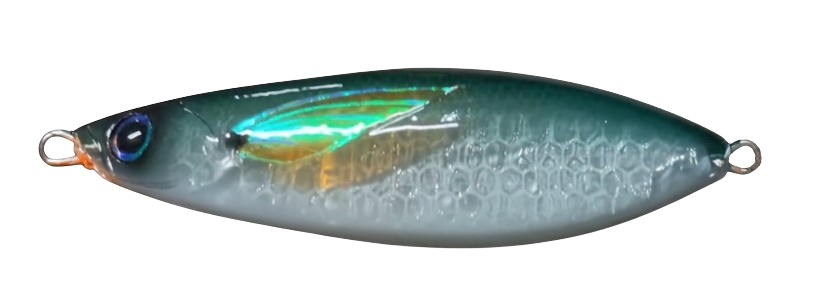
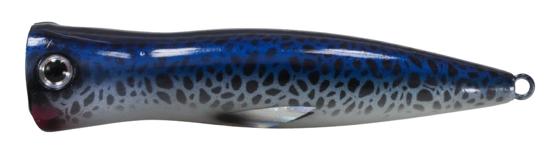
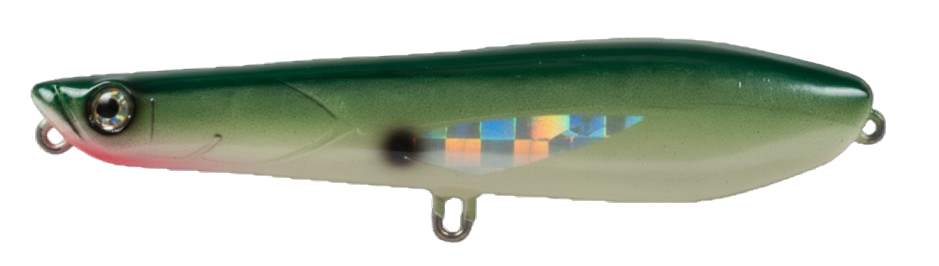

Cuerpo compacto, lance largo.

Señuelos artesanales mexicanos
Calibrados a mano para pesca real, y no solo de exhibición.
Art Mex Fishing diseña y fabrica señuelos de alto desempeño en Nayarit, México. Cada pieza se trabaja a mano, desde la madera hasta la calibración final, para entregarte confianza en cada lance, ya sea en mar o río.
Versión de lanzamiento · Pedidos sobre fabricación y stock limitado.
Hecho a mano en Nayarit
Señuelos diseñados para largas distancias de lance, acción suspendida y hundimiento lento, con terminados artesanales y aspecto realista.
Modelos
7 modelos base activos
Cada modelo base admite variaciones de longitud y peso,
y se irán incorporando nuevos diseños conforme avance la línea.
Por qué elegir Art Mex Fishing
No somos producción sin alma. Cada señuelo se construye pieza por pieza, buscando el equilibrio entre técnica y artesanía. El resultado: un señuelo que se siente vivo en el agua y aguanta jornadas reales de pesca.
Calibrados uno a uno
Madera + resina de alta resistencia
Acabados con pinturas de alta durabilidad
Distancia de lance de largo alcance
Diseño probado en mar y agua dulce
Catálogo de modelos
Esta es la primera línea oficial de señuelos Art Mex Fishing. Todos los modelos comparten acción suspendida y hundimiento lento, pensados para presentaciones controladas y ataques agresivos en distintos escenarios.
Perfil estilizado, 70+ m de lance.

Cuerpo ancho, presencia fuerte.

Superficie, ataques explosivos.

Lápiz rápido, alto alcance.



Proceso artesanal
Cada modelo nace en taller, no en una línea de producción anónima. Desde la elección de la madera hasta la calibración final, el objetivo es el mismo: que el señuelo responda en el agua como tú esperas.
01 · Diseño y tallado
Se selecciona la madera y se trabaja el cuerpo del señuelo hasta lograr el perfil
buscado. Aquí se define el volumen, equilibrio y comportamiento básico en el agua.
02 · Resina, pintura y sellado
El cuerpo se recubre con resina para darle resistencia, se aplica el esquema de
color elegido y se sella para protegerlo contra el uso real en mar y río.
03 · Calibración y prueba
Cada pieza se calibra una a una con herramienta especializada, ajustando peso y
herrajes para lograr acción suspendida, hundimiento lento y un nado estable.
Sobre Art Mex Fishing & contacto
Art Mex Fishing nace en Nayarit con una idea sencilla: crear señuelos que combinen el detalle del trabajo artesanal con el desempeño que exige la pesca deportiva real. No buscamos competir en cantidad, sino en confianza. Cada pieza que sale del taller refleja horas de prueba, ajuste y pasión por el mar.
Si quieres modelos personalizados, colores específicos o pedidos por volumen, envíanos un mensaje directo. Trabajamos bajo pedido y con stock limitado.